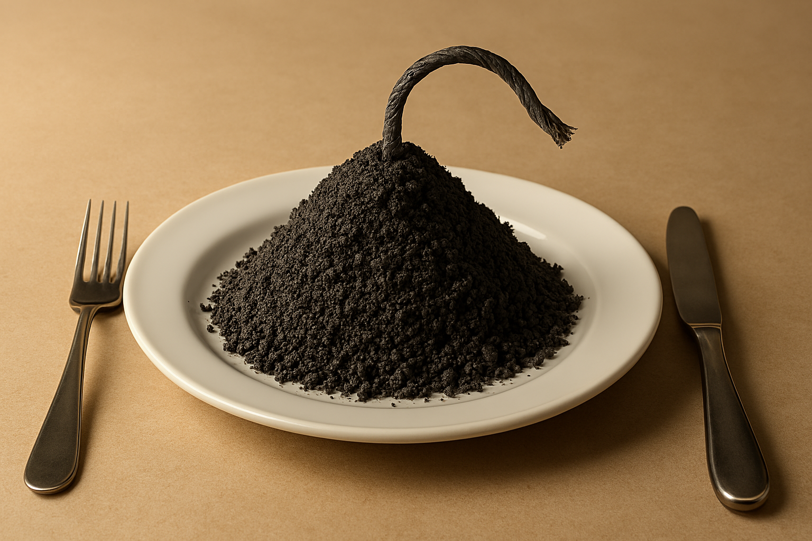

Home
How to make Smokeless Powder

Description
Although black powder is one of the safest explosives. it has disadvantages: It is extremely sensitive to sparks; and it leaves a messy residue in gun barrels, which necessitates frequent cleaning.
The advantage of smokeless powder is that it is an extremely stable high-powered explosive in the low-explosive class, which gives off only gaseous products upon explosion. The first type of smokeless powder used by the army was basically nitrocellulose with a small amount of diphenylamine, for stabilizer. Smokeless powder is perhaps the safest of any explosive, and for that reason is extremely popular today.
Ingredients
- Cotton
- Sodium hydroxide (NaOH) — 2%
- Sulfuric acid (H₂SO₄) — concentrated
- Nitric acid (HNO₃) — concentrated
- Sodium bicarbonate (NaHCO₃) — 2%
- Water (H₂O)
Steps
- Boil cotton for 30 minutes, in a 2 percent solution of sodium hydroxide.
- Wash the cotton in hot water and allow it to dry.
- Mix slowly and carefully at 25 degrees Centigrade, 250 cc. of concentrated sulfuric acid, 150 cc. of concentrated nitric acid, and 20 cc. of water. They must be kept at 25 degrees C.
- Next place the dried cotton in the acid solution, and stir well with either a glass or porcelain rod (do not use metal). This should be done for 35 minutes.
- After nitration, the acids arc washed away, and the cotton is washed in boiling water five times, each time for 25 minutes. The cotton is given several tests with litmus paper. If the litmus test proves that there is still some acid present, a 2 percent solution of sodium bicarbonate should neutralize whatever is left. This is important, since any remaining acid acts as an impurity to make the explosive more unstable.